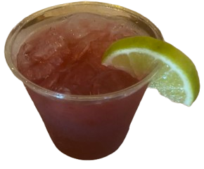
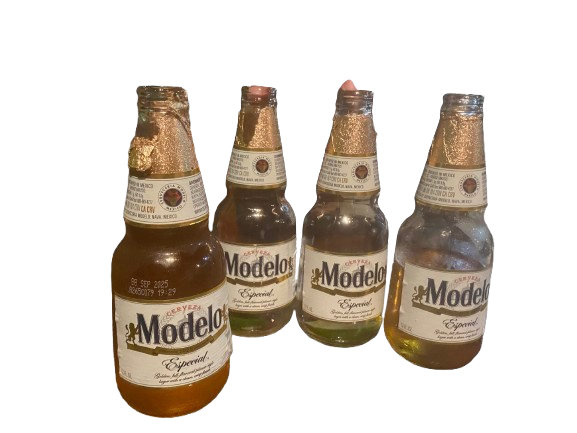
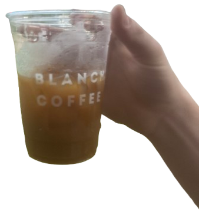

I believe this was a cold brew from Blanchard's Morris St. location. Ask for "for here glass, please."

Slight coffee hiatus this week... This oolong tea was perfect for when you're at a cafe and don't want another coffee "smooth and energizing" - very ideal. They use the metal tea steeper here and have cute little timers (set to roughly 2 minutes).

'Guinness is a stout that originated in the brewery of Arthur Guinness at St. James's Gate, Dublin, Ireland, in the 18th century.' Wikipedia
They say it's good paired with a light meal. I say it's best paired with a game of 8 ball and 'the lads'. (enjoy cold in a beatle's theme pub)

For the past month I haven't had any alcohol and instead having this every night. 8 oz of tonic water and about 1 oz of lime juice and some ice (lime rind as needed). Bonus points for a bachelorette-party-energy pint glass.

Made this iced maple latte with oat milk using evan's Ninja espresso machine which I'm plesantly suprised with the shot it pulled.
Here's a unique one - garam masala tomato soup. Took a sip before I snapped a photo. Jennie made me make a sign for this special. I had a hard time spelling it ... even still is it 'marsala' or 'masala'?

A maple latte with oat milk I made myself at work. The maple syrup is from VA ... that's the furthest south you can get it!
A great NA cocktail is what Jennie coined as a 'health' tonic. Recently, at work, I've been tasked with making tumeric, ginger, carrot juice with cayenne, black pepper, lemon, and pressed coconut water - or 'immunity shots' like at the grocery. Combined with a little tonic and you've got an excellent drink.
Formely known as 'the dollar-cup' this is a medium roasted cup of joe, black as midnight on a moonless night.

Here we have our first guest appearance by french canadian, Cameron. On the left, a frozen protein-oriented beverage containing: banana, yogurt, water, whey protein powder ("gonna buy plant based next time, I think." - cam), powdered peanut butter ("?" - your correspondence), honey. On the right, we have a cup of coffee (beans sourced from Rostov's).

An orange juice and tonic water beverage served with a mint leaf served in a Belhaven half pint glass (try Belehaven Black). Once my mother gave my grandmother a gallon freezer bag full of 'mint' leaves which were shortly returned after my grandmother accused her of giving her a bag of weeds. The legitimacy of this claim plagues my family to this day.
A combination of the aforementioned 'health-tonic' with a shot of espresso made by Karl. Did not get to try it but I had to put it on here for the color.
Had lunch my grandfather for his 88th birthday, although he claims to be turning 'only 85'. We had Jersey Mikes at his request. Here is a photo of his Modelo and my glass of ice water. He shared with me that when he was 3-years-old and his parents had his younger brother, they then took his name and gave it to his younger brother instead and changed his name.
I have been waiting to try this one for a while!! I forget the name but it's espresso-cola-lime-hibicus. Hard to tell in the photograph but the color of the drink was almost purple. Thank you lovely blanchard's baristas.
Two for One! Lauren's peroni with a lemon (apparently common in 'Amalfi Coast'(american accent)) and my lime and tonic. Fired up some mexican-street-corn last saturday. Not sure how traditional it was made but this is one of the few recipes I remember from the hell hole that was casa del barco(also american accent).

Had to snag a photo of these 2 (Iced Matcha & Iced Latte ('for here, please.')) Enjoyed on easter sunday at work. Footnote: I made an 'iced macchiato'(accent italiano (out of no where)) and forgot to snag a photo of it but it was a thing of beauty.
Cheers! These were made by fiona for us on easter. 'green tea, coconut water, half a lemon, tonic' Lovely taste but green tea makes me wig out for some reason. I was given the blue glass "because you're a boy" - fiona.
Attended a wedding this weekend and this was the 'Signature Cocktail'. It was a transfusion made with vodka(roughly 2-4 oz depending on which bartender you sought), ginger beer, and grape juice served with a lime. I did not know either the groom or the bride so as you can imagine I had quite a few of these.
Cameron and I's Old Speckled Hens enjoyed after band practice. We settled on going to The Cask Cafe for drinks. This is one of my favorite beers and can only be found here and the Jasper as far as I know. We sat on the patio over looking the old street car depot which I was given a quick history lesson about via cameron after 2 of these.
Taken from a hotel lobby leather sofa. I was trying my best to recreate one of those "she-will-be-hearing-from-me-tonight" photos. Hu 70% cocoa, pamplemouse lacroix, blind-novelist lit.
This is an orange-honey-cold-brew I made at work with oat milk. There is a bit of a debacle with how the cold brew is turning out every time I make it. I think I need to use more coffee grounds or use a different grind size.
2 tumeric-honey-lattes I made for David and I. People always call these golden milk latte ( eye roll ). Not sure why this angers me so much. (side note) I the have copilot extension on in VS Code and it keeps auto generating reviews for the drinks in the margins. Here are some of the reviews: "The tumeric-honey-latte is a delightful blend of flavors that will leave you feeling refreshed and energized. The tumeric adds a warm, earthy flavor that is perfectly balanced by the sweetness of the honey. The latte is creamy and smooth, making it a perfect drink for any time of day." - 5 stars.
Orange honey, orange juice, tonic water, and espresso. I think my tastebuds have finally accepted espresso-tonic combinations. As long as it is hotter than the sun outside and the drink is ice cold, I will drink it.
I'm back after a slight hiatus. My computer has been given me a lot of trouble lately, and I had to factory reset everything. Here is a banana smoothie with cold brew, oat milk, honey, cinnamon, and banana. With a paper straw - wahoo!
My friends went to this new place on Robinson St. called "Mexican Margarita" on a Monday a couple weeks ago. We did not realize that it was also Cinco de Mayo. Here are Tal and I's drinks of choice. The walls in this place are quite literally margarita-green.
Here's the first gif on this page. I tried to compress it as much as possible so it loads in. This was my Americano followed up with half of Cameron's Joe. I was practically levitating after this.
Stumbled upon Sarah in meadow park on her way to Garnette's. I went and sat at the bar and had a WBLT and an Unsweetened Iced Tea. I followed that up with a couple kolsches and a water. I then proceeded to fall asleep on the vmfa lawn slightly inebreiated. "Garnette's is a great place to go if you want to feel like you're in a movie." This was also the night I went to Brown's Island to see Fighting Gravity play since lauren had a plus one. This was an exceptional day and I do not normally live like this.
Split the B on my espresso-soda from a mystery cafe. Not sure why this is the best espresso-soda I can find. What even is it, really?
Macchiato style and Coconut water Americano made at home. There must be some unconscious proportional relationship between coffee drink size and swag.
Beer at The Diamond. The squirrels were "The Hanover Tomatoes" tonight. They unfortunately lost by 1 run and stranded 2 base runners in the 9th. - Yes this is really the size of the beverages they give you here.
A toast to the impromtu show we put on at lauren's porch during the Fan Art Walk. We played to drunken passerbyers and a few friends. These were 3 vodka tonics I made for cameron and tal and I paired with salt and vinegar chips.
A couple of penny pinchers and a disproportionate lime after the MJ Lenderman show at the National. B-lined it to brave-captain after the show via bicycles.
Cup of a coffee in a motherly mug and a new book. I had Libra in my cart on thrift books but I read the perfectly-imperfect blog post about this book "changing boys lives". Anyways, seems to be worth the hype I just got to the outbreak section of the book.
A miller-lite in a "very important" drink holder at the Mj Lenderman show. I was not originally going to this show, but the keyboardist for MJ and bassist for Wednesday, Ethan, came into the shop and was nice enough to put me on the guest list for the show. This gave me a VIP ticket and access to the special bar and balcony. Thank you Ethan!
{kind=link}